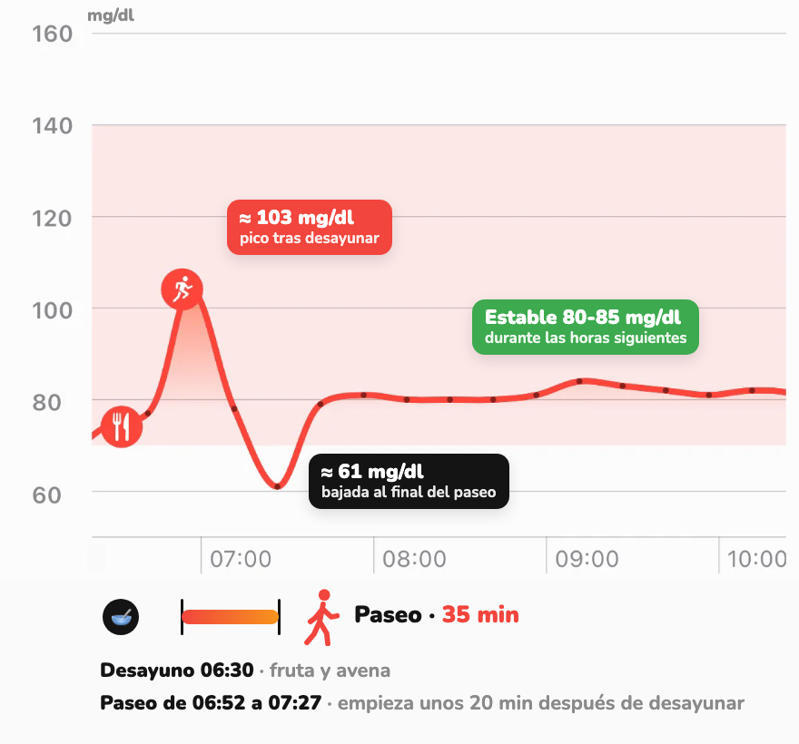

Misma comida, distinta respuesta
¿Paseo después de comer? Cuanto antes, mejor.
El momento cambia lo que hace por tu glucosa.
Desliza →
Hacemos visible lo invisible
El momento cambia lo que hace por tu glucosa.
Desliza →

Curva real de un Viber: desayuno con fruta y avena y paseo de 35 min. La respuesta puede variar entre personas.
| Si sales a caminar… | Lo más probable |
|---|---|
| Al terminar o en 10 min | El pico se atenúa mucho |
| Pasados 10-30 min | La glucosa puede caer a valores bajos |
Aun así, 30 minutos o más de paseo suelen dejar la glucosa estable las horas siguientes.
Y como cada cuerpo responde a su manera, mide tu curva.
Desliza →
glucovibes.com